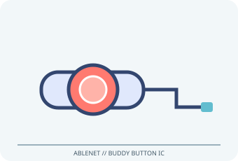

[ ADAPTIVE AND SWITCH-ACCESS CONTROLS // IDENTIFIED COMPONENT ]
AbleNet Buddy Button IC
Mechanical, pressure-activated single switch with a 2.5 in (6.4 cm) target, interchangeable colored caps and tactile/auditory feedback.

MODEL IDENTIFICATION: Product number 10000115. Confirm the exact label, regional suffix, revision, receiver/accessories, software and bundle before service or compatibility claims.
Model specifications
| Catalog subcategory | Adaptive and switch-access controls |
|---|---|
| Exact device / model / SKU | Product number 10000115 |
| Device and control operation | Momentary switch closure through a wired 3.5 mm (1/8 in) mono plug. Connect to a compatible switch port/interface; it is not a native USB device. |
| Host interface | Momentary switch closure through a wired 3.5 mm (1/8 in) mono plug. Connect to a compatible switch port/interface. |
| Switch/control inputs | Momentary switch closure through a wired 3.5 mm (1/8 in) mono plug. Connect to a compatible switch port/interface; it is not a native USB device. |
| Mounting and adjustability | Interchangeable caps permit color selection; use the supplied base or compatible mounting accessories on a stable surface. No electronic sensitivity setting; reposition for access rather than asking the user to overreach. |
| OS / host compatibility | 3.5 mm switch-input devices, AAC/communication equipment and switch interfaces. On computers, a separate compatible switch interface and operating-system access method are required. |
| Accessibility considerations | The wide button surface and immediate mechanical feedback offer a simple one-action control; match target position and required force to the individual user. |
Accessibility and safety notes
The wide button surface and immediate mechanical feedback offer a simple one-action control; match target position and required force to the individual user.
Use on a stable, dry surface; inspect cable strain relief and connector. Avoid unintended activation near moving equipment, and clean/disinfect only using AbleNet-approved methods. Not a medical call control.
Document observed condition separately from manufacturer specifications. Test activation and host response in a controlled, non-safety-critical setup; record accessories, host OS, driver/app and firmware versions.
Manufacturer and support sources
- AbleNet Buddy Button IC product pageManufacturer/support reference for model identification and setup. Confirm applicable region, hardware revision and bundle.
- AbleNet switch product support and documentation indexManufacturer/support reference for model identification and setup. Confirm applicable region, hardware revision and bundle.
Support pages and compatibility lists can change. Retain the manual revision used for a physical-device assessment.